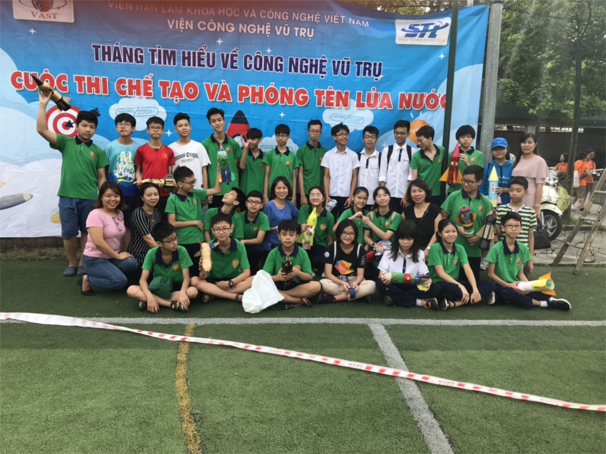
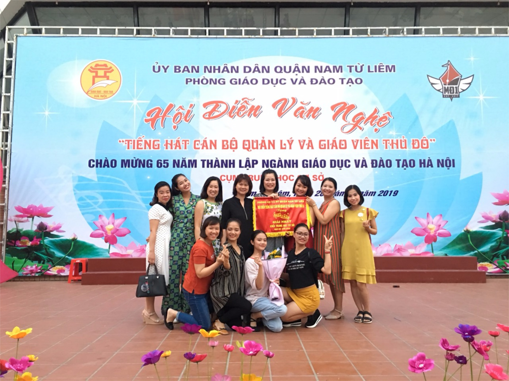
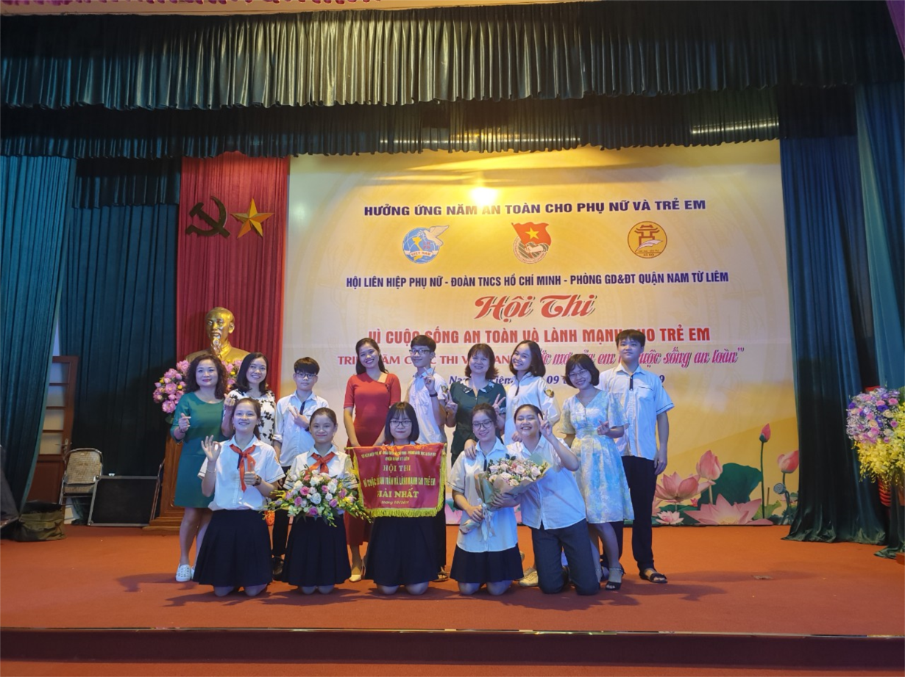
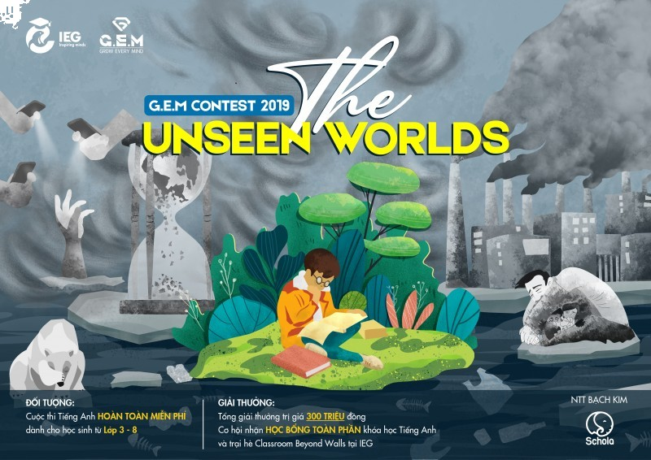

CUỘC THI CHẾ TẠO VÀ PHÓNG TÊN LỬA NƯỚC 2019 – BỆ PHÓNG ƯỚC MƠ

Hưởng ứng tháng tìm hiểu về công nghệ vũ trụ, tuyên truyền kiến thức khoa học vũ trụ tới cộng đồng và bước đầu đưa các em học sinh tiếp cận với những kiến thức cơ bản về khoa học vũ trụ, Viện Công nghệ Vũ trụ (STI) – Viện Hàn lâm Khoa học và Công nghệ Việt Nam phối hợp cùng các trường THCS trên địa bàn thành phố Hà Nội phát động và tổ chức cuộc thi chế tạo và phóng tên lửa nước “Water Rocket Contest 2019”.
Trường THCS Nam Từ Liêm đạt giải nhất cấp cụm THCS trong hội diễn văn nghệ “Tiếng hát cán bộ quản lý và giáo viên Thủ đô”

Ngày 28/09/2019, Hội diễn văn nghệ “ Tiếng hát cán bộ quản lý và giáo viên Thủ đô” cụm THCS đã được tổ chức tại trường THCS Mỹ Đình 1, thu hút đông đảo các cán bộ, giáo viên tham gia. Hội diễn được tổ chức nhằm chào mừng 65 năm ngày giải phóng Thủ đô và 65 năm ngày thành lập ngành Giáo dục và Đào tạo Hà Nội.
HỌC SINH THCS NAM TỪ LIÊM ĐẠT GIẢI NHẤT HỘI THI “VÌ CUỘC SỐNG AN TOÀN VÀ LÀNH MẠNH CHO TRẺ EM” NĂM 2019

Sáng ngày 09/10/ 2019, Hội liên hiệp phụ nữ quận Nam Từ Liêm phối hợp với Đoàn TNCS Hồ Chí Minh và Phòng GD&DT quận tổ chức hội thi “Vì cuộc sống an toàn và lành mạnh cho trẻ em”, triển lãm cuộc thi vẽ tranh “ Ước mơ của em về cuộc sống an toàn”.
Cuộc thi G.E.M Contest 2018, với hơn 2000 bài dự thi từ hơn 80 trường Tiểu học và THCS tại TP.HCM và HN

đã mang đến với các bạn học sinh lớp 3 - lớp 8 một làn gió mới mẻ về khái niệm “kỳ thi học thuật". Tại G.E.M Contest, sự sáng tạo, tiếng nói riêng, và tư duy phản biện là những yếu tố được ưu tiên hàng đầu, sẽ không có khái niệm “đúng", “sai" mà chỉ là những sáng kiến, những ý tưởng về một thế giới mà con ước mơ.
THÔNG BÁO Trả bằng tốt nghiệp THCS năm học 2017 – 2018 và 2018-2019
Trường THCS Nam Từ Liêm thông báo:
Nhà trường đang tiến hành trả bằng tốt nghiệp THCS năm học 2017 – 2018 và 2018-2019. Đề nghị học sinh đã tốt nghiệp năm 2018 và 2019 đến trường để nhận bằng tốt nghiệp.